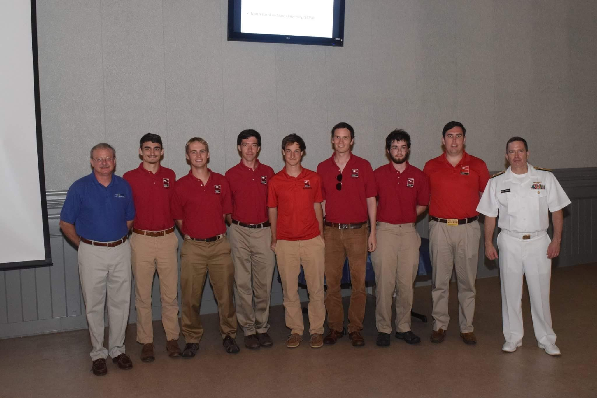
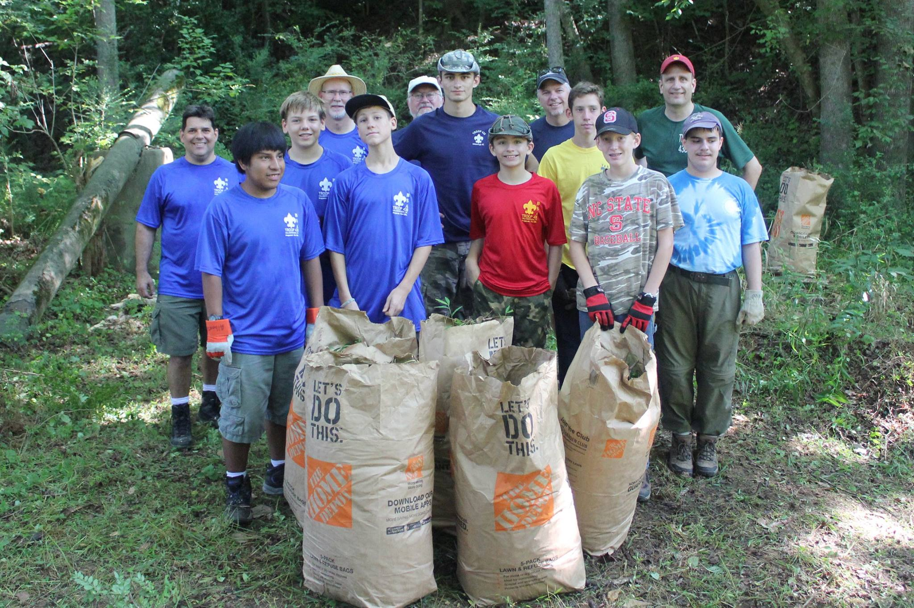
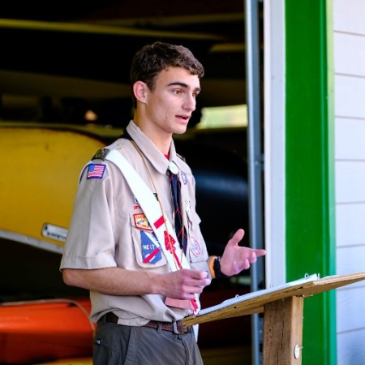

About Me¶
I am a student at North Carolina State University with a passion for Machine Learning, Robotics, Cryptography, and Distributed Applications.
Aerial Robotics Club at NC State¶
In the Aerial Robotics Club, I work with the software team to maintain the systems of the plane and ground station. These include the Pixhawk autopilot, our telemetry server, the flight database, the imagery system, and the manual and autonomous target detection systems.
Pictured above is the Aerial Robotics Club at the 2017 AUVSI competition.
Boy Scouts of America¶
I have had a long career as a member of the Boy Scouts of America(BSA). Along the way, I have made many friends, seen much, and learned more.
The picture above is of my eagle project in 2016. The project involved removing invasive plant species and seeding native plants along the Riverwalk trail in my hometown of Hillsborough, North Carolina.
Order of the Arrow, BSA¶
I have been a proud member of Boy Scouting’s National Honor Society, the Order of the Arrow, since 2011. In 2016, I had the honor of being elected as Occoneechee Lodge 104’s Vice Chief of Program. During my term, I had the opportunity to work with and learn from a great number of very passionate people, and lead them in service to our community.
